The holidays bring extra temptations — and extra risks — for dogs. Here are the Thanksgiving foods to keep off the floor and out of reach this season.
⚠ If your dog ate something dangerous
Act immediately — don't wait for symptoms.
- Call your vet or a pet poison helpline right away (ASPCA Animal Poison Control: 888-426-4435).
- Note how much was eaten and when.
- Do not induce vomiting unless a professional tells you to.
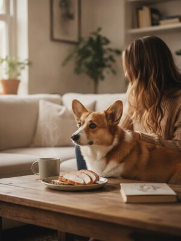
1. Cooked turkey Safe to feed
Plain cooked turkey is a lean, healthy protein for dogs. Remove the skin, bones and any seasoning.
See the full guide on dogs & cooked turkey →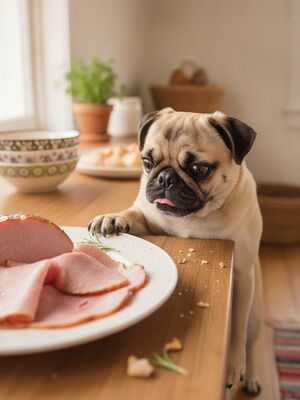
2. Ham In moderation
Dogs can have a little ham, but it’s very high in salt and fat, which can upset the stomach or trigger pancreatitis.
See the full guide on dogs & ham →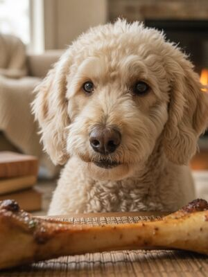
3. Cooked bones Never feed
Cooked bones become brittle and splinter, which can cause choking, mouth injuries or a punctured gut.
See the full guide on dogs & cooked bones →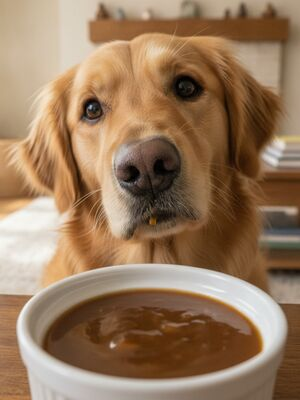
4. Gravy In moderation
A spoon of plain gravy won’t hurt most dogs, but gravy is high in fat and salt and often made with onion or garlic — which are toxic — so it’s best limited or skipped.
See the full guide on dogs & gravy →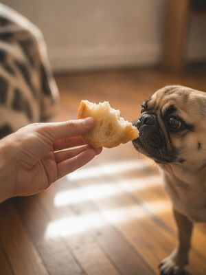
5. Bread In moderation
Plain baked bread in small amounts is harmless, but raw bread dough is dangerous as it expands and ferments.
See the full guide on dogs & bread →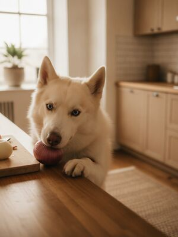
6. Onion Never feed
Onions damage red blood cells and can cause anemia. All forms — raw, cooked, powdered — are toxic.
See the full guide on dogs & onion →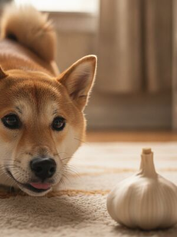
7. Garlic Never feed
Garlic is part of the onion family and is several times more potent. It damages red blood cells.
See the full guide on dogs & garlic →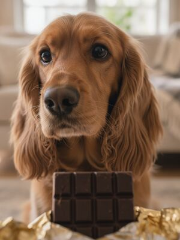
8. Chocolate Never feed
Chocolate contains theobromine and caffeine, which dogs break down very slowly, letting them build to toxic levels.
See the full guide on dogs & chocolate →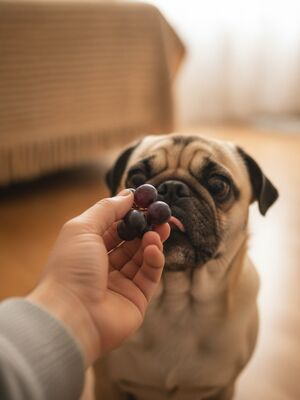
9. Grapes Never feed
Grapes can cause sudden kidney failure in dogs, even in small amounts. The exact toxin is still unknown.
See the full guide on dogs & grapes →10. Raisins Never feed
Raisins are dried grapes and are even more concentrated — a very small number can trigger kidney failure.
See the full guide on dogs & raisins →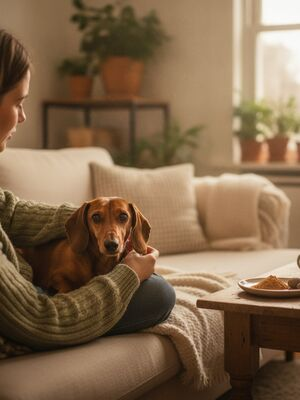
11. Nutmeg Never feed
Nutmeg contains myristicin, which is toxic to dogs and can affect the nervous system and heart.
See the full guide on dogs & nutmeg →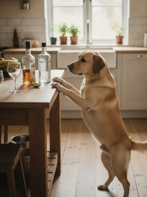
12. Alcohol Never feed
Alcohol is far more toxic to dogs than people. Even small amounts affect the brain, liver and breathing.
See the full guide on dogs & alcohol →Other guides you'll like
Foods toxic to dogsSafe fruits & veggiesFoods cats can't eatThanksgiving dangers
By the CanMyPet Editorial Team · Reviewed against ASPCA Animal Poison Control, the American Kennel Club (AKC) and Pet Poison Helpline · Last updated June 2026.